Мы разобрали текущую версию приложения, посмотрели, как устроены Duolingo, Babbel, Busuu и Drops, и собрали новый дизайн: светлый, с одним синим цветом, иконками, логотипом и живыми, но спокойными эффектами. Логику обучения (уроки, повторение по интервалам, аудирование) не трогали.
Прошлая версия была аккуратной, но слишком строгой: она выглядела как рабочий инструмент, а не как приложение, к которому хочется вернуться вечером.
Чёрный блок плана, чёрные кнопки и чёрные кружки «играть». Контраст максимальный, и экран давит, особенно вечером.
Стало: белые карточки на светло-голубом фоне, один синий для всего, что нажимается.
Ни логотипа, ни имени. Вкладка называлась «Türkçe», и приложение ничем не отличалось от десятка похожих.
Стало: имя Settlingo, значок-облачко со «S»-дорожкой, иконка для экрана телефона.
Нет ощущения пути. Текущий урок теряется среди остальных, прогресс почти не виден.
Стало: дорожка из кружков, как в Duolingo, с подсказкой «Начать» над следующим уроком.
Только слова внизу экрана. На iOS и Android люди ищут раздел по значку, а не читают подписи.
Стало: «стеклянная» панель с иконками и подписями, активный раздел подсвечен.
Плоские прямоугольники без глубины. Не хватало ощущения «кнопки», которую приятно нажать.
Стало: варианты с мягкой нижней тенью, которые проседают при нажатии, анимация верного и неверного ответа.
Цифры дня были, но без визуальной цели. Не было серии правильных ответов и праздника в конце урока.
Стало: кольцо дневной цели, счётчик «подряд» в уроке, финальный экран со вспышкой.
Читается хорошо, но характера нет.
Стало: округлый Nunito для заголовков и турецких слов, системный шрифт для текста.
Одна колонка, понятная иерархия текста, нижняя панель с ответом, план дня из трёх шагов, повторение по интервалам. Всё это сохранили.
Берём лучшие паттерны, но не копируем чужой стиль: у Settlingo свой цвет, свой знак и своя интонация.
| Приложение | Сильная сторона дизайна | Что берём | Что не берём |
|---|---|---|---|
| Duolingo | Учебный путь из узлов вместо списка, чтобы было понятно, что делать дальше. Узнаваемость за счёт насыщенного цвета, «объёмных» кнопок и скруглённых форм. | Дорожку уроков, объёмные кнопки и варианты, нижнюю панель с ответом, праздник в конце | Кислотный зелёный, маскота, штрафы и «жизни», мультяшность |
| Babbel | Взрослая сдержанность и минимализм. Главная вкладка «Учить» сразу показывает следующие уроки. | Спокойный тон, ясный следующий шаг на главном экране | Перегруженные меню курсов |
| Busuu | Структурированный дашборд и план обучения, упор на говорение. | План на день, отдельная тренировка «Скажи вслух» | Платные стены посреди урока |
| Drops / Memrise | Визуальное обучение словам короткими раундами. | Крупные слова, быстрые раунды, «слово дня» | Таймеры и давление скоростью |
| Apple / Google | Системные паттерны: нижняя панель с иконками, скругления, мягкие тени, «стекло». | Стеклянный таб-бар, системный шрифт текста, сегментированный переключатель | Мелкий серый текст и бледные контролы |
Реальные экраны приложения, слева прошлая версия, справа новая. Ширина экрана 390 точек, как у iPhone 15.
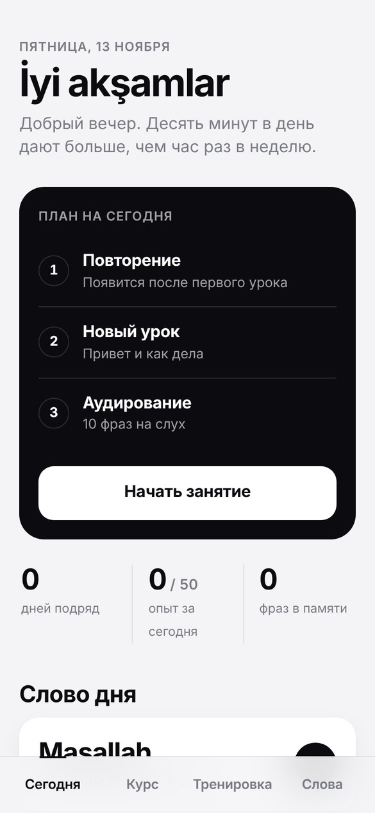
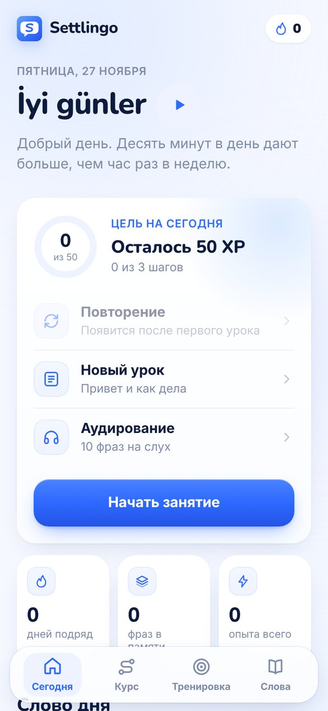
Чёрный блок стал светлой карточкой с кольцом дневной цели. У каждого шага плана появилась иконка, сверху логотип и счётчик дней подряд.
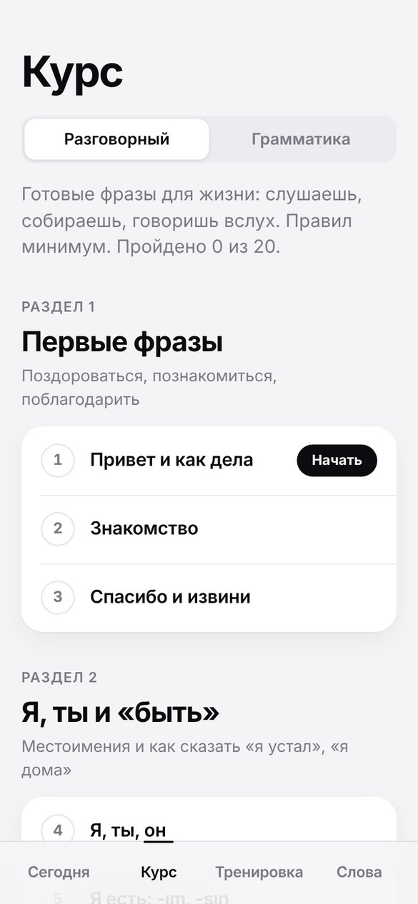
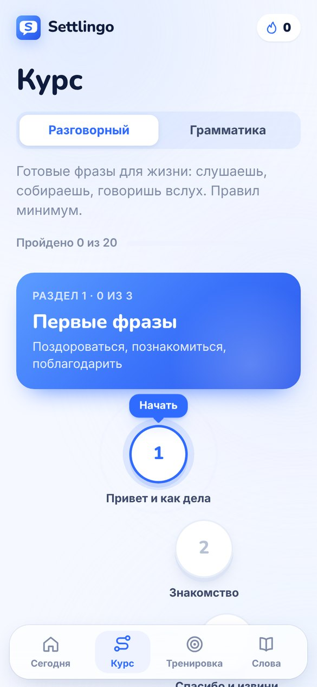
Список стал дорожкой: пройденные уроки синие с галочкой, следующий пульсирует и подписан «Начать». Разделы стали синими карточками с градиентом.
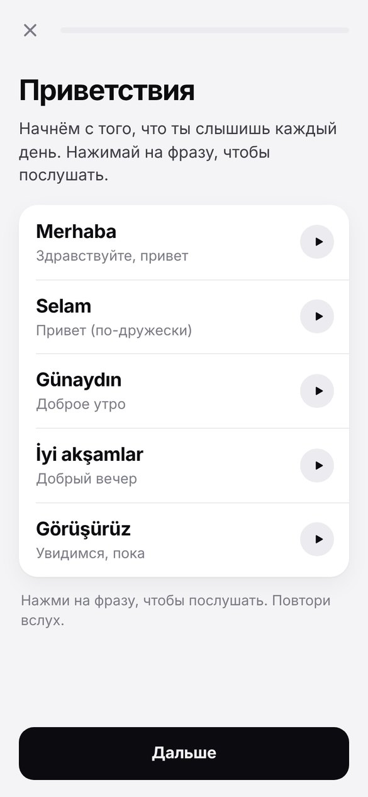
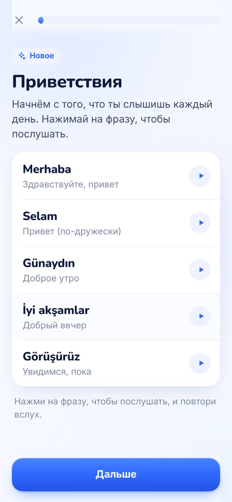
Чёрные кружки заменили мягкими голубыми кнопками «играть». Турецкие слова набраны округлым шрифтом, чтобы глаз сразу отделял их от русского.
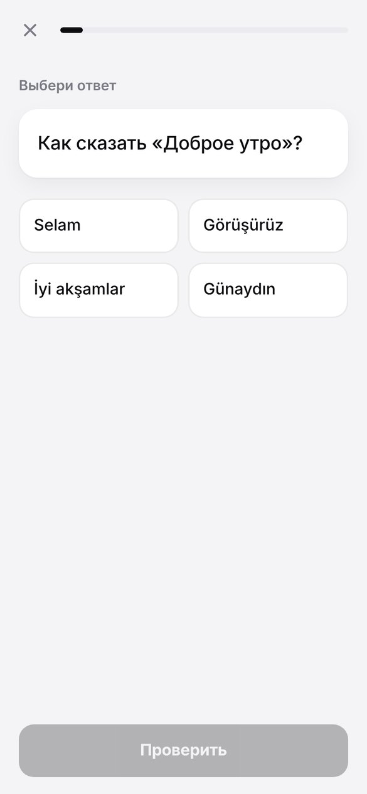
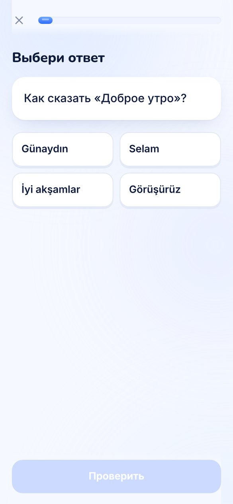
Варианты стали «объёмными» и проседают при нажатии. Неактивная кнопка «Проверить» теперь светло-синяя и не теряется на фоне.
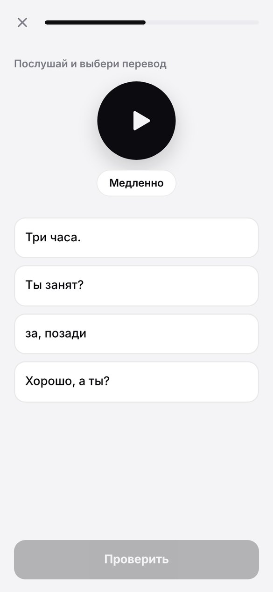
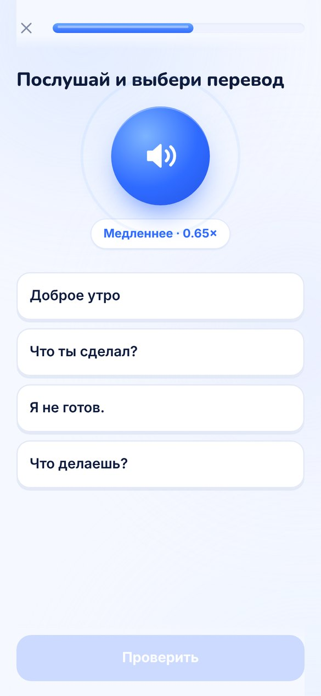
Вместо чёрного «плей» стоит большая синяя кнопка с динамиком. Пока звучит фраза, от неё расходятся кольца, так что видно, что звук идёт.
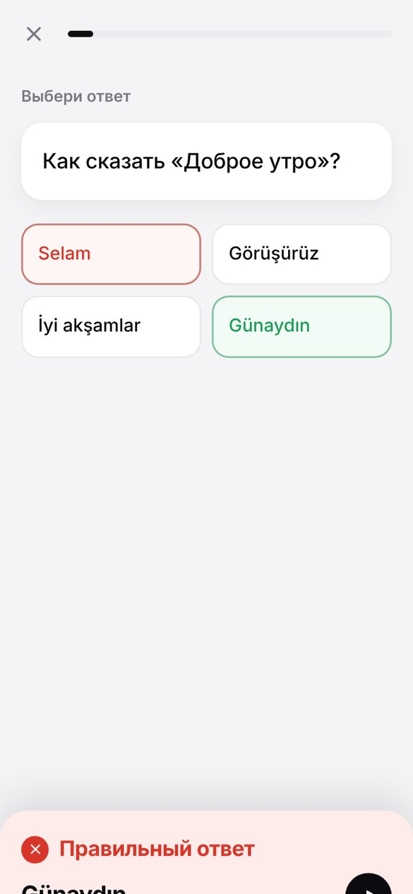
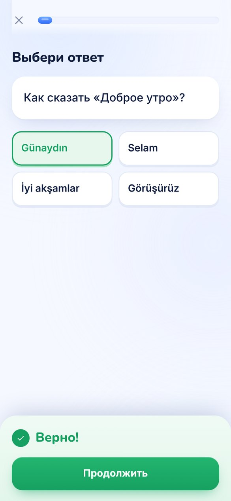
Панель с ответом стала мягче: нежный зелёный или розовый фон, кнопка «Продолжить» в цвет результата, при серии из трёх верных ответов появляется счётчик.
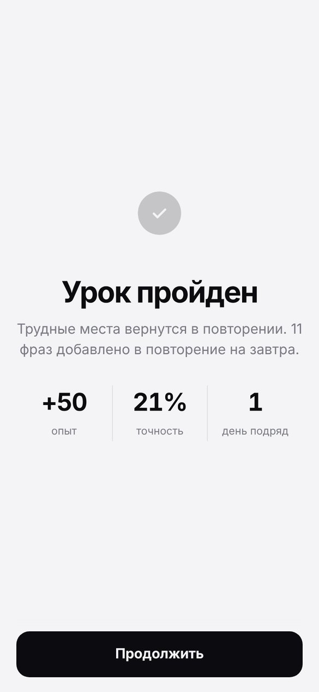
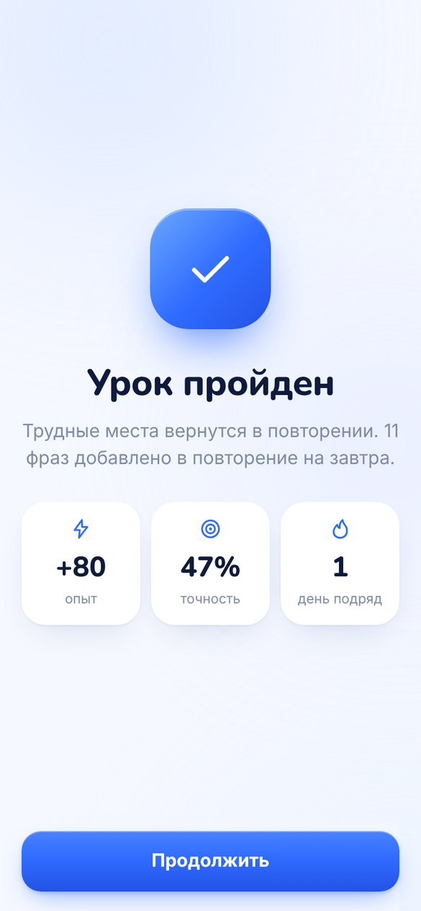
Серый кружок стал синим значком, который «выпрыгивает» с маленькой вспышкой. Итоги урока разложены по карточкам с иконками.
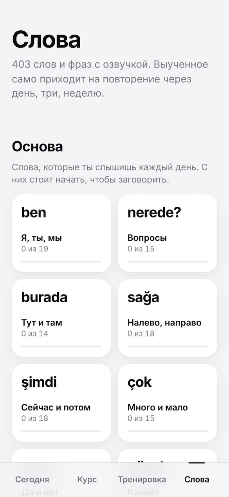
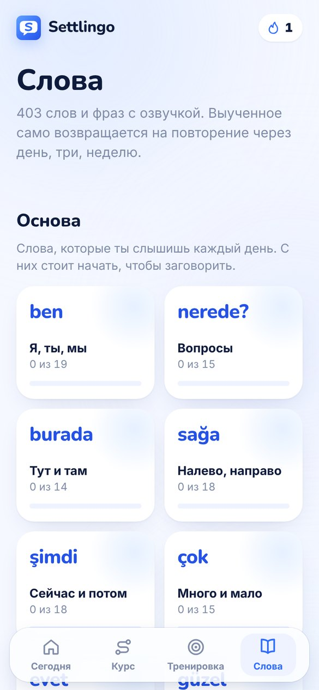
Плитки тем приподнимаются при наведении, слово-пример набрано синим, прогресс показан синей полоской.
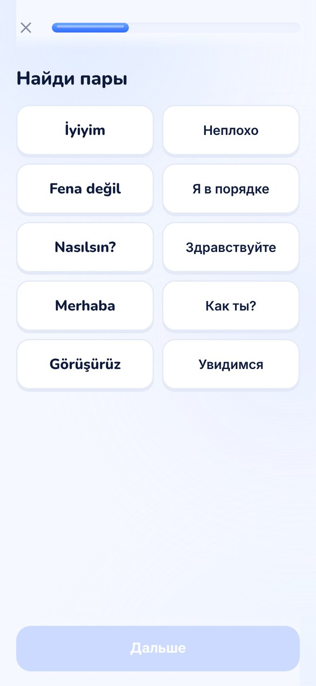
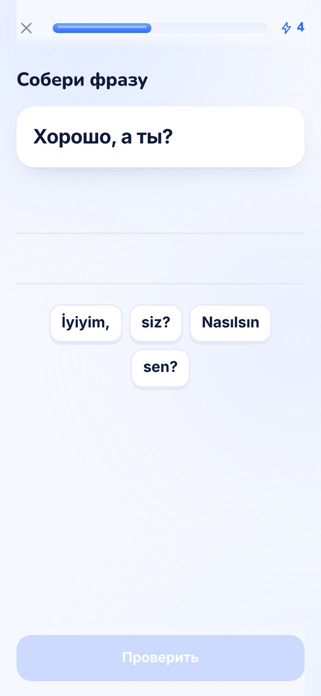
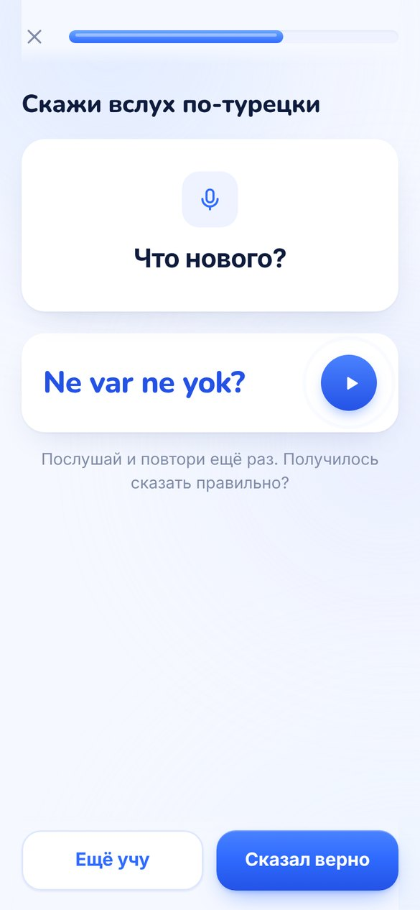
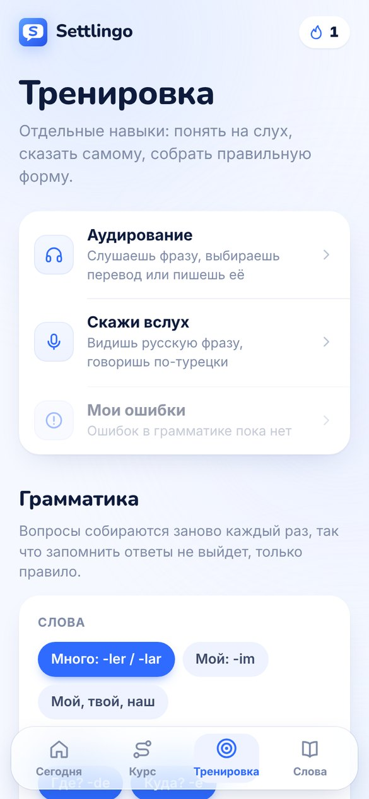
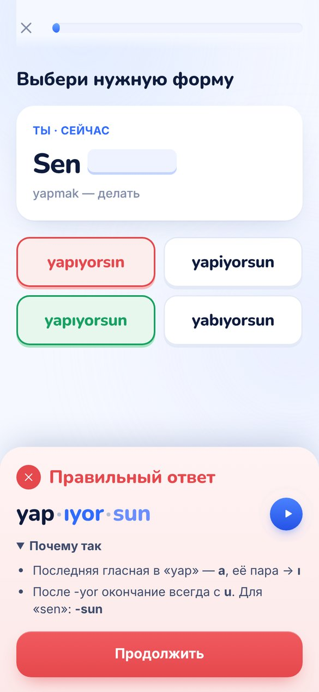
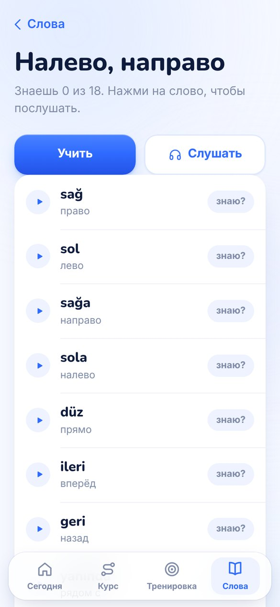
Облачко речи, внутри «S», нарисованная как извилистая дорожка. Это одновременно первая буква Settlingo, разговор и путь обучения. Знак держится от 16 пикселей (иконка вкладки браузера) до иконки на экране телефона.
Первый вариант со знаком «ş» отбросили: в облачке он читался как знак доллара.
Один синий цвет для всего, что нажимается. Зелёный и красный появляются только в ответах. Никаких эмодзи и радуги.
Nunito 800 — заголовки и турецкие слова. Округлый, как знак.
Системный шрифт — весь остальной текст. SF Pro на iPhone, Roboto на Android.
Settlingo — тихий помощник для тех, кто уже живёт в Стамбуле: турецкий вокруг слышен каждый день, не хватает смелости и словаря, чтобы говорить. Поэтому дизайн мотивирует ясностью, а не давлением.
Светлый фон, один цвет, мягкие тени. Приложение, которое приятно открыть вечером после работы.
На главном экране всегда понятно, что делать сейчас: план из трёх шагов и одна большая кнопка.
Упражнения «Скажи вслух» и диктант важнее выбора из вариантов. Дизайн выносит их на первый план.
Живые микроанимации, серия ответов, вспышка в конце урока. Без маскота, штрафов и «потерянных жизней».
Опубликовать на GitHub Pages из репозитория Settlingo, чтобы приложение открывалось по обычной ссылке у друзей и коллег.
Сделать «установку на телефон» (PWA): значок на экране, работа без интернета, звук в кэше.
Короткое знакомство при первом запуске: уровень, цель в минутах в день, напоминание.
Тёмная тема в той же палитре, синхронизация прогресса между телефоном и ноутбуком, проверка произношения микрофоном в «Скажи вслух».